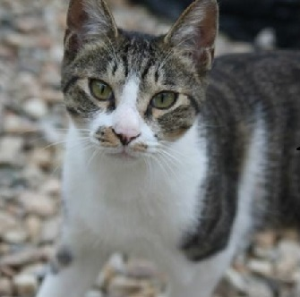

세계 지도

Europe
| 프랑스 | |
|---|---|

|
 버만  샤트룩스 |
| UK | |

|
 브리티시_쇼트헤어  소말리  데본 렉스  스코티시 폴드  히말라얀 |
| 러시아 | |

|
 시베리아 숲  러시안 블루 |
| 노르웨이 | |

|
 노르웨이 숲 |
| 맨섬 | |

|
 맹크스 |
Asia
| 한국 | |
|---|---|
 |

코리아 쇼트헤어 |
| 일본 | |
 |
 재패니즈 밥테일 |
| 싱가폴 | |
 |
 싱가푸라 |
| 인도 | |
 |
 봄베이 히말라얀 |
| 태국 | |
 |
 샴  코랫  버미즈 고양이 |
| 터키 | |
 |
 터키시_반  터키시 앙고라 |
America
| U.S.A | |
|---|---|
 |
 벵갈  랙돌  메인쿤  아메리카_쇼트헤어  아메리칸 컬  오시캣  발리니즈  세렝게티  오리엔탈_쇼트헤어  먼치킨 히말라얀  통키니즈 |
| 캐나다 | |
 |
 스핑크스 통키니즈 |
Africa
| 에티오피아 | |
|---|---|
 |
 아비시니안 |
| 이집트 | |
 |
 이집션 마우 |
기타
| 페르시안 | |
|---|---|
 페르시안  엑죠틱 숏헤어  페르시안_친칠라 페키  페르시안_친칠라 돌 히말라얀  나폴레옹 |
|
| 사바나 캣 | |
 사바나 캣  사바나 캣  사바나 캣 |
|